정보처리산업기사 (2011-08-21 기출문제)
1과목: 데이터 베이스
1. 해싱 함수의 값을 구한 결과 키 K1, K2 가 같은 값을 가질 때, 이들 키 K1, K2 의 집합을 무엇이라고 하는가?
- Mapping
- Folding
- Synonym
- Chaining
(정답률: 79%)

2. A, B, C, D의 순서로 정해진 입력자료를 스택에 입력하였다가 출력한 결과가 될 수 없는 것은?(단, 왼쪽부터 먼저 출력된 순서이다)
- D, C, B, A
- C, D, A, B
- A, B, C, D
- B, C, D, A
(정답률: 72%)
3. 데이터베이스의 특성으로 옳은 내용 모두를 나열한 것은?
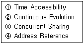
- ①, ②, ③, ④
- ②, ④
- ①, ②, ④
- ①, ②,③
(정답률: 75%)
4. 관계대수와 관계해석에 대한 설명으로 옳지 않은 것은?
- 기본적으로 관계대수와 관계해석은 관계 데이터베이스를 처리하는 기능과 능력면에서 동등하다.
- 관계 대수는 질의에 대한 해를 생성하기 위해 수행해야 할 연산의 순서를 명시해야 하므로 비절차적 특징을 가진다.
- 관계해석은 원하는 정보가 무엇이라는 것만 정의하는 비절차적 특징을 가지고 있다.
- 관계해석은 수학의 프레디킷 해석(Predicate Calculus)에 기반을 두고 있다.
(정답률: 66%)
5. 외래 키에 대한 설명으로 옳지 않은 것은?
- 외래 키는 현실 세계에 존재하는 개체 타입들 간의 관계를 표현하는데 중요한 역할을 수행한다.
- 외래 키로 지정되면 참조 릴레이션의 기본 키에 없는 값은 입력할 수 없다.
- 외래 키를 포함하는 릴레이션이 참조 릴레이션이 되고, 대응 되는 기본 키를 포함하는 릴레이션이 참조하는 릴레이션이 된다.
- 참조 무결성 제약조건과 밀접한 관계를 가진다.
(정답률: 53%)
6. 시스템 카탈로그에 대한 설명으로 옳지 않은 것은?
- 시스템 자체에 관련 있는 다양한 객체에 관한 정보를 포함하는 시스템 데이터베이스이다.
- 데이터 사전이라고도 한다.
- 무결성 확보를 위하여 일반 사용자는 내용을 검색해 볼 수 없다.
- 기본 테이블, 뷰, 인덱스, 패키지, 접근 권한 등의 정보를 저장한다.
(정답률: 85%)
7. What is an ordered list in which all insertion and deletions are made at one end, called the top?
- Queue
- Array
- Stack
- Linked list
(정답률: 72%)
8. 다음 자료를 삽입 정렬을 사용하여 오름차순 정렬하고자 할 경우, PASS 2의 결과는?
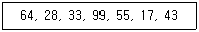
- 28, 33, 64, 55, 17, 43, 99
- 28, 33, 64, 99, 55, 17, 43
- 43, 28, 33, 64, 99, 55, 17
- 28, 33, 55, 64, 99, 17, 43
(정답률: 76%)
9. 논리적 데이터 모델 중 오너-멤버(Owner-Member) 관계를 가지며, CODASYL DBTG 모델이라고도 하는 것은?
- E-R 모델
- 관계 데이터 모델
- 계층 데이터 모델
- 네트워크 데이터 모델
(정답률: 79%)
10. 다음 중 큐의 응용 분야로 가장 적합한 것은?
- 운영체제의 작업 스케줄링
- 수식 계산 및 수식 표기법
- 인터럽트 처리
- 서브루틴 호출
(정답률: 78%)
11. 개체-관계 모델(E-R 모델)에 대한 설명으로 옳지 않은 것은?
- 개체 타입과 관계 타입을 이용해서 현실 세계를 개념적으로 표현하는 방법이다.
- E-R 다이어그램은 E-R 모델을 그래프 방식으로 표현한 것 이다.
- E-R 다이어그램의 다이아몬드 형태는 관계 타입을 표현하며, 연관된 개체 타입들을 링크로 연결한다.
- 현실 세계의 자료가 데이터베이스로 표현될 수 있는 물리적 구조를 기술하는 것이다.
(정답률: 55%)
12. 뷰(View)의 특성에 해당하는 것으로만 짝지어진 것은?
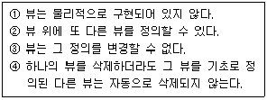
- ①, ②, ③, ④
- ①, ②, ④
- ①, ②, ③
- ①, ③, ④
(정답률: 64%)
13. SQL의 데이터 정의어(DDL)로만 짝지어진 것은?
- SELECT, UPDATE, DROP
- INSERT, DELETE, CREATE
- SELECT, UPDATE, ALTER
- CREATE, DROP, ALTER
(정답률: 81%)
14. 개체 무결성 제약 조건에 대한 다음 설명 중 ( )안의 내용으로 옳은 것은?
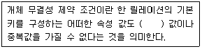
- NULL
- TUPLE
- DOMAIN
- FOREIGN KEY
(정답률: 87%)
15. 다음 트리를 중위 순서로 운행한 결과는?
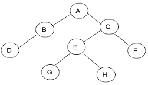
- A B C D E F G H
- D B A G E H C F
- A B D C E G H F
- B D G H E F A C
(정답률: 76%)
16. 데이터베이스에서 아직 알려지지 않거나 모르는 값으로서 “해당 없음” 등의 이유로 정보 부재를 나타내기 위해 사용하는 특수한 데이터 값을 무엇이라 하는가?
- 원자값(atomic value)
- 참조값(reference value)
- 무결값(integrity value)
- 널값(null value)
(정답률: 88%)
17. 선형 자료구조로만 짝지어진 것은?
- 스택, 트리
- 트리, 그래프
- 스택, 큐
- 큐, 그래프
(정답률: 80%)
18. 데이터베이스의 3층 스키마에 대한 옳은 설명으로만 짝지어진 것은?
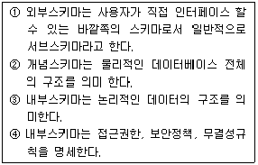
- ①, ②
- ①, ②, ③
- ①, ②, ③, ④
- ①
(정답률: 49%)
19. 데이터베이스 설계 단계 중 논리적 설계 단계에 해당하는 것은?
- 개념적 설계 단계에서 만들어진 정보 구조로부터 특정 목표 DBMS 처리할 수 있는 스키마를 생성한다.
- 다양한 데이터베이스 응용에 대해서 처리 성능을 얻기 위해 데이터베이스 파일의 저장 구조 및 액세스 경로를 결정한다.
- 물리적 저장장치에 저장할 수 있는 물리적 구조의 데이터로 변환하는 과정이다.
- 물리적 설계에서 옵션 선택시 응답시간, 저장 공간의 효율화, 트랜잭션 처리율 등을 고려하여야 한다.
(정답률: 58%)
20. What's the explain next sentence? Choose the collect answer.
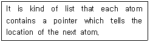
- Stack
- Graph
- Tree
- Linked list
(정답률: 59%)
2과목: 전자 계산기 구조
21. 컴퓨터 메모리에 저장된 바이트들의 순서를 설명하는 용어로 바이트 열에서 가장 큰 값이 먼저 저장되는 것은?
- right-endian
- left-endian
- big-endian
- little-endian
(정답률: 78%)
22. 명령어 ADD(100)이 수행되면 다음 중 어느 것이 연산장치로 보내지는가? (단, ( )는 indirect addressing을 뜻하고, 기억장소 100 번지에는 2004가 저장되어 있다)
- 2004
- 2004번지의 내용
- 100
- 100번지의 내용
(정답률: 65%)
23. 어떤 micro-computer의 기억 용량이 64 Kbyte 이다. 이 micro-computer의 memory 수와 필요한 address line의 수는?(단, memory 1개의 용량은 1 byte 이다)
- 216개, 16 line
- 264개, 64 line
- 264개, 16 line
- 216개, 64 line
(정답률: 46%)
24. 다음 중 OP-코드의 기능으로 볼 수 없는 것은?
- 제어 기능
- 함수연산 기능
- 입출력 기능
- 주소 지정 기능
(정답률: 48%)
25. O-주소 인스트럭션 형식의 특징이 아닌 것은?
- 연산을 위한 스택을 갖고 있으며, 연산 수행 후에 결과를 스택(stack)에 보존한다.
- 자료를 얻기 위하여 스택에 접근할 때는 top이 지정하는 곳에 접근한다.
- unary 연산 경우에는 2개의 자료가 필요하고, top이 지정하는 곳의 자료를 처리하고, 결과는 top 다음 위치에 기억한 다.
- binary 연산인 경우 2개 자료가 필요하고, 스택 상단부 2자리에 저장한다.
(정답률: 55%)
26. 모든 마이크로 오퍼레이션에 대해 서로 다른 마이크로 사이클 시간을 할당하는 방법은?
- 비동기식
- 동기고정식
- 동기가변식
- 중앙집중식
(정답률: 54%)
27. RS 플립플롭의 입력과 출력에 대한 설명으로 틀린 것은?
- 입력 S가 1일 때 Q, Q‘는 모두 0 이 된다.
- 입력 RS가 모두 0일 때, Q, Q‘는 앞의 상태를 유지한다.
- 입력 RS는 모두 1 이 되어서는 안 된다.
- 출력 Q‘는 항상 Q의 반대로 된다.
(정답률: 49%)
28. 다음과 같은 마이크로 사이클의 명령어는?
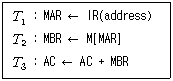
- ADD
- SUB
- MUL
- STORE
(정답률: 63%)
29. 데이지체인(daisy-chain) 우선순위 인터럽트 방법에서 인터럽트를 발생하는 장치들의 연결 방법은?
- 모든 장치를 직렬로 연결한다.
- 모든 장치를 병렬로 연결한다.
- 직렬과 병렬로 연결한다.
- 우선순위에 따라 직렬 및 병렬로 연결한다.
(정답률: 58%)
30. 중앙처리장치에서 데이터를 요구하는 명령을 내린 순간부터 데이터를 주고받는 것이 끝나는 순간까지의 시간을 무엇이라 하는가?
- access time
- loading time
- seek time
- search time
(정답률: 69%)
31. 고정 소수점 수에 대한 표현에서 음수로의 변환이 가장 쉬운 것은?
- 부호와 절대치 방법
- 1의 보수
- 2의 보수
- r의 보수
(정답률: 46%)
32. 디스크에서 CAV 방식에 의한 단점에 해당하는 것은?
- 저장 공간의 낭비
- 처리 속도의 저하
- 다수의 단말 장치 필요
- 제한적 오류 검출
(정답률: 49%)
33. 전가산기(full adder)의 sum(s)과 carry(C0) 비트를 논리식으로 바르게 나타낸 것은?
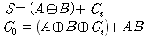
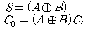
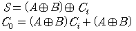
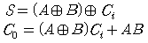
(정답률: 47%)
34. 다음 중 논리 연산만으로 짝지어진 것은?
- MOVE, AND, COMPLEMENT
- ROTATE, ADD, SHIFT
- MOVE, EX-OR, SUBTRACT
- MULTIPLY, AND, DIVIDE
(정답률: 53%)
35. 전원 공급이 중단되어도 내용이 지워지지 않으며, 전기적으로 삭제하고 다시 쓸 수도 있는 기억장치는?
- SRAM
- PROM
- EPROM
- EEPROM
(정답률: 68%)
36. 고정 소수점 수와 부동 소수점 수의 표현에서 숫자 표현 크기를 제한하는 요소는?
- 제한이 없다.
- 기억용량
- Word의 bit수
- 기억 장치의 품질
(정답률: 74%)
37. RAM은 동적RAM과 정적RAM으로 나누는데 이들의 차이점은?
- 읽고 쓸 수 있다.
- 쓸 수는 없으나 읽을 수는 있다.
- 동적 RAM은 refresh가 필요하다.
- 정적 RAM은 refresh가 필요하다.
(정답률: 66%)
38. 단일 IC 패키지에 OR 게이트와 디코더를 기본으로 포함하는 것은?
- 카운터
- ROM
- TTL
- MOS
(정답률: 43%)
39. 컴퓨터의 제어장치가 특정한 메이저 상태와 타이밍 상태에 있을 때, 다음 중 제어 데이터(control data)의 종류가 아닌 것은?
- 각 major 상태의 변천을 제어
- 중앙처리장치의 제어점을 제어
- 명령어의 수행 순서 결정 제어
- 주소 매핑 결정 제어
(정답률: 49%)
40. 인터럽트의 발생 원인이나 종류를 소프트웨어로 판단하는 방법은?
- Polling
- Daisy chain
- Decoder
- Multiplexer
(정답률: 66%)
3과목: 시스템분석설계
41. 프로세스 설계상 유의 사항으로 거리가 먼 것은?
- 분류 처리를 가능한 최대화한다.
- 프로세스 전개의 사상을 통일한다.
- 하드웨어의 기기 구성, 처리 성능을 고려한다.
- 오류에 대비한 검사시스템을 고려한다.
(정답률: 74%)
42. 소프트웨어 개발 생명주기 모형 중 나선형(Spiral Model) 모델에 대한 설명으로 거리가 먼 것은?
- 시스템 구축시 발생하는 위험을 최소화 할 수 있다.
- 시제품을 만들어 사용자 및 관리자에게 가능성과 유용성을 보여줄 수 있다.
- 복잡, 대규모 시스템의 소프트웨어 개발에 적합하다.
- 초기에 위험 요소를 발견하지 못할 경우 위험 요소를 제거하기 위해서 많은 비용이 들 수 있다.
(정답률: 57%)
43. 출력 시스템과 입력 시스템이 일치된 것으로 일단 출력된 정보가 이용자의 손을 거쳐 다시 입력되는 시스템의 형태는?
- COM(Computer Output Microfilm) 시스템
- Turn Around 시스템
- File 출력 시스템
- Display 출력 시스템
(정답률: 76%)
44. 파일 설계 순서로 옳은 것은?
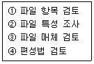
- ①→③→②→④
- ①→②→③→④
- ④→①→③→②
- ④→③→②→①
(정답률: 66%)
45. 표의 숫자 코드에 대한 설명으로 틀린 것은?
- 코드에 물리적 수치를 부여하여 기억이 용이하다.
- 코드의 추가 및 삭제가 용이하다.
- 같은 코드를 반복 사용하므로 오류가 적다.
- 항목의 자리수가 짧아 기계 처리가 용이하다.
(정답률: 55%)
46. 소프트웨어의 일반적인 특성으로 거리가 먼 것은?
- 사용자의 요구나 환경 변화에 적절히 변경할 수 있다.
- 사용에 의해 마모되거나 소멸된다.
- 하드웨어처럼 제작되지 않고 논리적인 절차에 맞게 개발된다.
- 일부 수정으로 소프트웨어 전체에 영향을 줄 수 있다.
(정답률: 75%)
47. 객체 지향의 개념에서 하나 이상의 유사하나 객체들을 묶어서 하나의 공통된 특성을 표현한 것을 무엇이라고 하는가?
- 인스턴스
- 메소드
- 메시지
- 클래스
(정답률: 71%)
48. 시스템의 특성 중 다음 설명에 해당하는 것은?
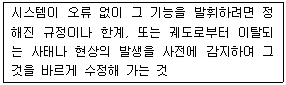
- 제어성
- 자동성
- 목적성
- 종합성
(정답률: 77%)
49. 시스템 처리 시간의 견적 방법 중 처리 시간의 계산을 작업 처리도(Process Chart)를 기초로 한 간단한 계산식에 중앙처리장치의 능력과 주변장치의 속도에 관한 자료를 대입하여 계산하는 방법은?
- 컴퓨터에 의한 계산방법
- 추정에 의한 방법
- 입력에 의한 계산 방법
- 흐름에 의한 계산 방법
(정답률: 44%)
50. 흐름도의 종류 중 컴퓨터의 입력, 처리, 출력되는 하나의 처리 과정을 그림으로 표시한 것은?
- 프로세스 흐름도
- 프로그램 흐름도
- 시스템 흐름도
- 블록 차트
(정답률: 64%)
51. 시스템 분석가로서 훌륭한 분석을 하기 위한 기본 사항으로 거리가 먼 것은?
- 분석가는 창조성이 있어야 한다.
- 분석가는 시간배정과 계획 등을 빠른 시간 내에 파악할 수 있어야 한다.
- 분석가는 컴퓨터 장치와 소프트웨어에 대한 지식을 가져야 한다.
- 분석가는 기계 중심적이어야 한다.
(정답률: 72%)
52. 시스템의 문서화 목적으로 거리가 먼 것은?
- 시스템 개발 후 유지 보수가 용이하다.
- 시스템 개발 단계의 요식행위이다.
- 시스템 개발팀에서 운용팀으로 인계 인수를 쉽게 할 수 있다.
- 시스템 개발 중 추가 변경에 따른 혼란을 방지할 수 있다.
(정답률: 77%)
53. 자료 사전에서 자료의 연결(and)시 사용하는 기호는?
- =
- { }
- ( )
- +
(정답률: 72%)
54. 코드(code) 설계시 유의사항으로 거리가 먼 것은?
- 다양성이 있어야 한다.
- 컴퓨터 처리에 적합하여야 한다.
- 체계성이 있어야 한다.
- 확장성이 있어야 한다.
(정답률: 73%)
55. 코드의 오류 발생 형태 중 좌우 자리가 바뀌어 발생하는 에러는?
- transposition error
- addition error
- omission error
- transcription error
(정답률: 80%)
56. 다음의 입력 설계 단계 중 가장 마지막 단계에 해당하는 것은?
- 입력 정보의 매체화
- 입력 정보의 투입
- 입력 정보의 수집
- 입력 정보의 내용
(정답률: 49%)
57. 주로 편의점, 백화점 등 유통업체의 계산대에서 사용하는 장치로서 고객이 물품을 구입하게 되면 단말기에서 직접 입력하여 중앙 컴퓨터에 전달되어 현장 상황이 즉각적으로 반영되는 장치는?
- 디지타이저
- MICR(Magnetic Ink Character Reader)
- POS(Point of Sale)
- 데이터 수집 장치
(정답률: 70%)
58. 모듈 작성시 주의사항으로 옳지 않은 것은?
- 결합도와 응집도를 높여서 모듈의 독립성을 향상시킨다.
- 이해하기 쉽도록 작성한다.
- 모듈의 내용이 다른 곳에 적용이 가능하도록 표준화 한다.
- 적절한 크기로 설계한다.
(정답률: 76%)
59. 색인순차편성(ISAM) 파일에 대한 특징이 아닌 것은?
- 순차처리와 임의처리가 모두 가능하다.
- 레코드의 추가 삭제시 파일 전체를 복사할 필요가 없다.
- 어느 특정 레코드 접근시 인덱스에 의한 처리로 직접 편성 파일에 비해서 접근 시간이 빠르다.
- 오버플로우 되는 레코드가 많아지면 사용 중에 파일을 재편성하는 문제점이 발생된다.
(정답률: 37%)
60. 입력되는 데이터들을 논리적인 순서에 따라 물리적 연속 공간에 순차적으로 기록하는 방식으로 주로 자기 테이프에 사용되며, 일괄 처리 중심의 업무처리에 많이 이용되는 파일 편성 방법은?
- 색인순차편성
- 순차편성
- 리스트편성
- 랜덤편성
(정답률: 69%)
4과목: 운영체제
61. 자원 보호 기법 중 접근 제어 행렬을 구성하는 요소가 아닌 것은?
- 영역
- 객체
- 권한
- 시간
(정답률: 63%)
62. 3 페이지가 들어갈 수 있는 기억장치에서 다음과 같은 순서로 페이지가 참조될 때 FIFO 기법을 사용하면 페이지 부재(page fault)는 몇 번 일어나는가? (단, 현재 기억장치는 모두 비어 있다고 가정한다)
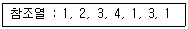
- 4
- 5
- 6
- 8
(정답률: 67%)
63. 다음 문장의 ( )안에 가장 적합한 기법은?
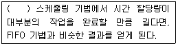
- SJF
- HRN
- SRT
- RR
(정답률: 59%)
64. UNIX에서 사용하는 디렉토리 구조는?
- 1단계 구조
- 2단계 구조
- 비순환 그래프 구조
- 트리 구조
(정답률: 67%)
65. 워킹 셋(WORKING SET)의 의미로 가장 적합한 것은?
- 프로세스가 실행되는 동안 일부 페이지만 집중적으로 참조 되는 경향을 의미한다.
- 최근에 참조된 기억장소가 가까운 장래에도 계속 참조될 가능성이 높음을 의미한다.
- 하나의 기억장소가 참조되면 그 근처의 기억장소가 계속 참조 되는 경향이 있음을 의미한다.
- 프로세스가 효율적으로 실행되기 위해 프로세스에 의해 자주 참조되는 페이지들의 집합을 말한다.
(정답률: 68%)
66. HRN 스케줄링 기법을 적용할 경우 우선 순위가 가장 낮은 것은?
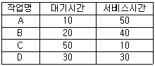
- A
- B
- C
- D
(정답률: 70%)
67. 교착상태의 해결 방안 중 시스템에 교착상태가 발생했는지 점검하여 교착상태에 있는 프로세스와 자원을 발견하는 것을 의미하는 것은?
- Prevention
- Detection
- Avoidance
- Recovery
(정답률: 57%)
68. 파일 디스크립터가 가지고 있는 정보가 아닌 것은?
- 파일의 구조
- 접근 제어 정보
- 보조기억장치상의 파일이 위치
- 파일의 백업 방법
(정답률: 69%)
69. 분산 운영체제의 구조 중 모든 사이트는 하나의 중앙 노드에 직접 연결되어 있으며 중앙 노드에 과부하가 걸리면 성능이 현저히 감소되고, 중앙 노드의 고장시 모든 통신이 이루어지지 않는 구조는?
- Star connection
- Ring connection
- Fully connection
- Hierarchy connection
(정답률: 78%)
70. 분산처리 운영체제 시스템의 설명으로 옳지 않은 것은?
- 시스템의 점진적 확장이 용이하다.
- 가용성과 신뢰성이 증대된다.
- 자원의 공유와 부하 균형이 가능하다.
- 중앙 집중형 시스템에 비해 보안 정책이 간소해진다.
(정답률: 67%)
71. 스레드(thread)의 특징이 아닌 것은?
- 자신만의 스택과 레지스터(STACK, REGISTER)을 갖는다.
- 하나의 프로세스 내에서 병행성을 증대시키기 위한 기법이다.
- 운영체제의 성능을 개선하려는 하드웨어적 접근 방법이다.
- 독립된 제어흐름을 갖는다.
(정답률: 54%)
72. SJF(Shortest Job First) 스케줄링에서 작업 도착 시간과 CPU 사용시간은 다음 표와 같다. 모든 작업들의 평균 대기시간은 얼마인가?
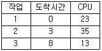
- 15
- 16
- 24
- 25
(정답률: 56%)
73. 프로세스 설계시 유의사항으로 옳지 않은 것은?
- 모든 사람이 이해할 수 있도록 표준화한다.
- 처리 과정을 간결하고 명확히 표현한다.
- 가급적 분류 처리를 많게 한다.
- 시스템 상태, 구성 요소, 기능 등을 종합적으로 표시한다.
(정답률: 80%)
74. 다음과 같이 트랙이 요청되어 큐에 순서적으로 도착하였다. 모든트랙을 서비스하기 위하여 디스크 스케줄링 기법 중 FCFS 스케줄링 기법이 사용되었을 경우, 트랙 35는 요청된 트랙 중 몇 번째에 서비스를 받게 되는가? (단, 현재 헤드의 위치는 트랙 50이다)
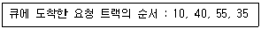
- 1번째
- 2번째
- 3번째
- 4번째
(정답률: 58%)
75. 13K의 작업을 다음 그림의 14K 공백의 작업공간에 할당했을 경우 사용된 기억장치 배치전략 기법은?
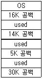
- Last fit
- First fit
- worst fit
- Best fit
(정답률: 80%)
76. 파일 내용을 화면에 표시하는 UNIX 명령은?
- cp
- mv
- rm
- cat
(정답률: 74%)
77. FCFS(First Come First Served) 스케줄링의 특성으로 거리가 먼 것은?
- 대기 큐를 재배열하지 않고 일단 요청이 도착하면 실행 예정 순서가 도착순으로 고정된다.
- 더 높은 우선 순위를 가진 요청이 도착하더라도 요청의 순서가 바뀌지 않는다.
- 먼저 도착한 요청이 우선적으로 서비스 받게 되므로 근본적인 공평성이 보장되고 프로그래밍하기도 쉽다.
- 실린더의 제일 안쪽과 바깥쪽에서 디스크 요청의 기아(starvation) 현상이 발생할 수 있다.
(정답률: 63%)
78. 상호 배제의 문제는 병행하여 처리되는 여러 개의 프로세스가 공유 자원을 동시에 접근하기 때문에 발생한다. 따라서, 공유되는 자원에 대한 처리 내용 중에서 상호 배제를 시켜야 하는 일정 부분에 대해서는 어느 하나의 프로세스가 처리하는 동안에 다른 프로세스의 접근을 허용하지 말아야 한다. 이 때, 상호 배제를 시켜야 하는 일정 부분을 무엇이라고 하는가?
- Locality
- Page
- Semaphore
- Critical Section
(정답률: 56%)
79. UNIX에서 쉘의 기능에 해당하는 것은?
- 입출력 관리
- 파일 관리
- 명령어 해석
- 프로세스 관리
(정답률: 66%)
80. 운영체제에 대한 설명으로 옳지 않은 것은?
- 컴퓨터 시스템을 편리하게 이용할 수 있도록 한다.
- 컴퓨터 하드웨어를 효율적인 방법으로 이용할 수 있다.
- 사용자가 프로그램을 수행할 수 있는 환경을 제공하는데 목적이 있다.
- 고급 언어로 작성된 원시 프로그램을 번역한다.
(정답률: 77%)
5과목: 정보통신개론
81. 데이터통신에서 Hamming code를 이용하여 에러를 정정하는 방식은?
- 군계수 체크방식
- 자기정정 부호방식
- 패리티 체크방식
- 정마크 부호방식
(정답률: 50%)
82. 다음 정보통신 관련 설명 중 틀린 것은?
- IBM의 SNA는 컴퓨터 간 접속을 용이하게 체계화된 네트워크 방식이다.
- 본격적인 데이터통신의 시초는 미국의 반자동 방공 시스템(SAGE)이다.
- 온라인시스템의 대량보급으로 정보통신을 위한 표준화의 필요성이 줄어들었다.
- 데이터전송은 컴퓨터에 의해 처리된 정보의 전송이라 할 수 있다.
(정답률: 73%)
83. 다음 중 통신회선의 다중화를 함으로서 얻어지는 가장 큰 장점은?
- 에러정정이 쉽다.
- 송수신 시스템이 간단하다.
- 선로의 공동이용이 가능하다.
- 전송속도가 현저히 빨라진다.
(정답률: 56%)
84. 다음 중 DSU(Digital Service Unit)의 기능은?
- 아날로그 신호를 디지털 데이터로 변환시킨다.
- 디지털 데이터를 아날로그 신호로 변환시킨다.
- 아날로그 신호를 아날로그 데이터로 변환시킨다.
- 디지털 데이터를 디지털 신호로 변환시킨다.
(정답률: 66%)
85. TCP 프로토콜에 대한 설명으로 틀린 것은?
- 전송 계층 서비스를 제공한다.
- 전이중 서비스를 제공한다.
- 비 연결형 프로토콜이다.
- 에러 제어 프로토콜이다.
(정답률: 53%)
86. ITU-T 의 X 시리즈 권고안 중 공중데이터 네트워크에서 동기식 전송을 위한 DTE와 DCE 사이의 접속 규격은?
- X.20
- X.21
- X.22
- X.25
(정답률: 32%)
87. TCP/IP 관련 프로토콜 중 인터넷 계층에 해당하는 것은?
- HTTP
- ICMP
- SMTP
- UDP
(정답률: 49%)
88. 다음 중 CODEC에 대한 설명으로 알맞은 것은?
- 데이터통신망 관리를 위한 디지털 장치이다.
- 데이터통신망에 의해 정보를 제어하는 장치이다.
- 데이터를 모아 일괄로 처리하는 장치이다.
- 아날로그 신호를 디지털 전송로에 맞게 디지털 신호로 바꾸어 전송해 주는 장치이다.
(정답률: 76%)
89. 주파수분할 다중화(FDM)방식에서 보호대역(guard band)이 필요한 이유는?
- 주파수 대역폭을 넓히기 위함이다.
- 신호의 세기를 크게 하기 위함이다.
- 채널간의 간섭을 막기 위함이다.
- 많은 채널을 좁은 주파수 대역에 싣기 위함이다.
(정답률: 79%)
90. 정보통신시스템을 구성하는 경우에 이중화된 장치나 선로를 적용하는 것은 다음 중 어떤 기능과 가장 밀접한 관련이 있는가?
- 효율성
- 신뢰성
- 용이성
- 교환성
(정답률: 38%)
91. 광섬유 케이블의 기본 동작 원리는 무엇에 의해서 이루어 지는가?
- 산란
- 흡수
- 전반사
- 분산
(정답률: 69%)
92. 다음 중 RS-232C 표준 인터페이스는 몇 개의 핀(PIN)으로 구성되는가?
- 10
- 22
- 25
- 32
(정답률: 58%)
93. 데이터 단말장치와 데이터 회선종단장치의 전기적, 기계적 인터페이스는?
- ADSL
- DSU
- SERVER
- RS-232C
(정답률: 61%)
94. OSI 7계층에 해당하지 않는 것은?
- Application Layer
- Presentation Layer
- Data Link Layer
- Network Access Layer
(정답률: 61%)
95. 다음 중 프로토콜의 계층화에 대한 장점이 아닌 것은?
- 전체적인 오버헤드(over head)가 증가한다.
- 모듈화에 의한 전체 설계가 용이하다.
- 이기종간 호환성 유지가 비교적 쉽다
- 한 계층을 수정할 때 다른 계층에 영향을 주지 않는다.
(정답률: 68%)
96. HDLC(High-Level Data Link Control)에 대한 설명 중 옳지 않은 것은?
- 비트지향형의 프로토콜이다.
- 제어부의 확장이 가능하다.
- 데이터링크 계층의 프로토콜이다.
- 통신방식으로 전이중방식이 불가능하다.
(정답률: 66%)
97. 다음 중 패킷교환에서 가상회선방식에 대한 설명으로 옳지 않은 것은?
- 속도 및 코드변환이 가능하다.
- 대역폭 설정이 고정적이다.
- 패킷의 도착순서가 고정적이다.
- 모든 패킷은 설정된 경로에 따라 전송된다.
(정답률: 32%)
98. 통신망의 데이터 교환방식의 유형에 속하지 않는 것은?
- 신호교환
- 패킷교환
- 메시지교환
- 회선교환
(정답률: 46%)
99. 전송제어 문자 중에서 수신된 내용에 아무런 에러가 없다는 의미를 가진 것은?
- ENQ
- ACK
- NAK
- DLE
(정답률: 51%)
100. 다음 중 IEEE의 LAN 관련 프로토콜이 바르게 연결된 것은?
- IEEE 802.2 - 매체접근 제어(MAC)
- IEEE 802.3 - 논리링크 제어(LLC)
- IEEE 802.4 - 토큰 버스(Token Bus)
- IEEE 802.5 - 광섬유 LAN
(정답률: 62%)